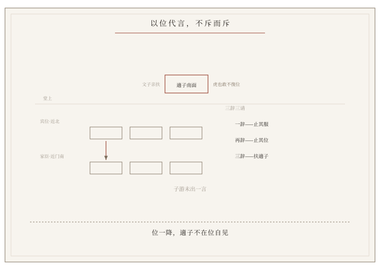

檀弓上 · 三·五十九 · 第 262 课
司寇惠子之喪，子游為之麻衰、牡麻絰。文子辭，子游曰「禮也」。子游趨而就諸臣之位，文子又辭，子游曰「固以請」。文子退，扶適子南面而立，曰「虎也敢不復位」。子游趨而就客位。
说什么事：惠子废適立庶，子游穿了重服、又降到臣位，两次被辞两次不退。至第三次，主人自己把適子扶到南面，讥乃行。
落在哪一层：礼，兼及礼数与礼意。论「以位代言」。
为何编在此位：上节以琴验情，是内；此节以位示理，是外。一柔一直，皆「不斥而及」。
【经】司寇惠子之喪，子游為之麻衰、牡麻絰。文子辭曰：「子辱與彌牟之弟游，又辱為之服，敢辭。」子游曰：「禮也。」文子退反哭。子游趨而就諸臣之位，文子又辭曰：「子辱與彌牟之弟游，又辱為之服，又辱臨其喪，敢辭。」子游曰：「固以請。」文子退，扶適子南面而立，曰：「子辱與彌牟之弟游，又辱為之服，又辱臨其喪，虎也敢不復位？」子游趨而就客位。
【注】惠子，卫将军文子弥牟之弟惠叔兰也，生虎者。惠子废適立庶，为之重服以讥之；麻衰，以吉服之布为衰。文子辞，谢其存时；又辱为之服，止之服也。文子退反哭——子游名习礼，文子亦以为当然，未觉其所讥。子游趋而就诸臣之位，深讥之；大夫之家臣，位在宾后。文子又辞——止之在臣位。固以请，再不从命。文子退，扶適子南面而立——觉所讥也；虎，適子名；文子亲扶而辞，敬子游也；南面而立，则诸臣位在门内北面明矣。子游趋而就客位——所讥行。
【疏】此一节论子游讥司寇惠子废適立庶得行之事。案《世本》：灵公生昭子郢，郢生文子木及惠叔兰，兰生虎，为司寇氏；文子生简子瑕，瑕生卫将军文氏。然则弥牟是木之字。子游既与惠子为朋友，应著吊服、加缌麻带绖；今乃著麻衰、牡麻绖，故云「重服讥之」。云「麻衰，以吉服之布为衰」者，案《诗》云「麻衣如雪」，又《间传》云「大祥，素缟麻衣」，皆吉服之布称麻，故知此麻衰亦吉服之布也。案吊服，锡衰十五升去其半，疑衰十四升；今子游麻衰乃吉服十五升，轻于吊服，而云「重服以讥之」者，据牡麻绖为重吊服——弁绖大如缌之绖，一股而环之；今乃用牡麻绞绖，与齐衰绖同，故云「重」也。大夫之宾位在门东近北，大夫之家臣位亦在门东而南近门，并皆北向，故在「向后」也；故卢云「丧宾后主人，同在门东，家臣宾后，则近南也」。郑亦不知臣定位，今以此为证，故云「明」矣。子游吊在臣位，適子既乡南面对子游，故知臣位在门内北面也。
司寇惠子 卫将军文子弥牟之弟惠叔兰，官司寇。
麻衰 以吉服之布（十五升）为衰。轻于吊服。
牡麻絰 牡麻绞绖，与齐衰绖同。重于吊服之弁绖。
文子 弥牟，惠子之兄，虎之伯父。
辱与……游 谦辞：委屈你与我的弟弟交往。
敢辞 敢请辞去（此服）。辞，不受。
反哭 回到哭位。
就诸臣之位 走到家臣之位。大夫家臣位在宾后、近南。
固以请 坚持请求（不退）。固，坚。
扶適子南面而立 把適子虎扶到南面主位。
復位 回到適子本位。
就客位 回到宾位。
司寇惠子死，子游为他服麻衰、系牡麻绖。文子辞谢说：「委屈你与我弟弟交往，又委屈你为他服，不敢当。」子游说：「这是礼。」文子退回哭位。
子游快步走到家臣的位置上去。文子又辞：「委屈你与我弟弟交往，又委屈你为他服，又委屈你亲临他的丧，不敢当。」子游说：「我坚持请求。」文子退下，把適子虎扶到南面主位站着，说：「委屈你与我弟弟交往，又委屈你为他服，又委屈你亲临他的丧——虎啊，你敢不回到本位吗？」子游这才快步回到宾位。
惠子废適立庶，是卫国一家之政失序。子游与惠子为友，吊其丧，本应著吊服、加缌麻带绖；他却著麻衰、牡麻绖——麻衰轻，牡麻绖重，轻重相参，看上去近常而实异。知礼者一见即思，不知者不觉。
文子三辞，子游三不退。到第三辞，文子自己扶適子南面，一句话把「废適立庶」之非从主人口中说出。子游此时才回客位。全节子游未说一句「你错了」。
第一层 以服为讥 吊服有常：锡衰十五升去其半，疑衰十四升，首服弁绖（大如缌绖，一股而环之）。子游用吉服之布为衰，是轻；用牡麻绞绖，与齐衰绖同，是重。轻其衰而重其绖，故曰「重服以讥之」。礼可以讥，但讥须在礼之内：不用言语，用升数。
第二层 以位为言 大夫之宾位在门东近北，家臣之位亦在门东而南近门，并皆北向。子游「趋而就诸臣之位」，是自降于臣。降一位，则堂上之理自见：若適子在位，吊者不应居臣位；吊者居臣位，则適子不在位可知。此所谓「不斥而斥」。疏言郑「不知臣定位」，以此文为证，故云「明」矣——一篇经文，反过来成了注家的证据。
第三层 三辞三进 文子每辞皆敬：谢其存时，止其服，止其位。子游每进皆礼：一曰「礼也」，二曰「固以请」。客气与原则相持，而原则不退；退的是主人。胜而仍以礼：文子「亲扶而辞」，子游「趋而就客位」。一个认了，一个不居功。
第四层 主人自讥 「虎也敢不复位」——这句是文子说的，不是子游说的。讥之至此，主人自讥，胜于客讥。子游所求，从头到尾不是「认错」，是「复位」；位一复，错自明。
与今日何干 指出一件事错了，直说常伤人，绕说常无效。此节给的法子是：把自己的位置放到「错」所造成的位置上去，让对的位置自己显出来。不是辩论，是站位。而站位须先有一身「不合常而合法」的服——你得先让人看出你是有意为之，才不至于被当成不懂。
| 左 | 右 |
|---|---|
| 麻衰（吉服之布） | 轻 |
| 牡麻绖（同齐衰） | 重 |
| 轻重相参 | 似常而实异 |
| 就诸臣之位 | 自降一位 |
| 位一降 | 適子不在位自见 |
| 三辞 | 敬 |
| 三请 | 礼 |
| 扶適子南面 | 主人自讥 |
画一处大夫家的堂与阶，视点略俯。堂上南面空着主位，阶下门东并立两排人：靠北一排是宾，靠南近门一排是家臣。子游（中年士人、麻衰、腰系粗绖）独自从宾列走出来，站到家臣一列的最前。堂上一人（文子，年老、深衣）正伸手扶一位少年（虎）转向南面。不写文字、不画人面细节。赭色只用在子游腰间那道粗绖与少年脚下的一小块席。
